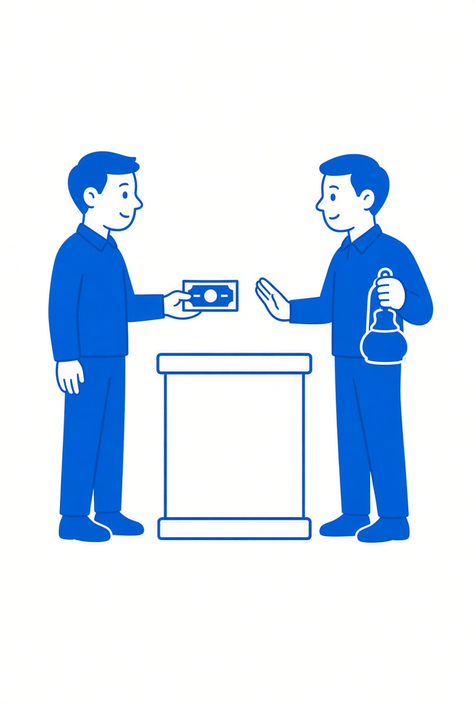
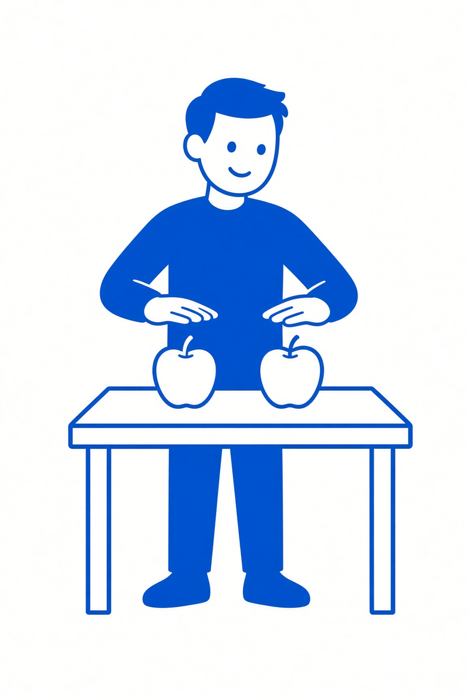
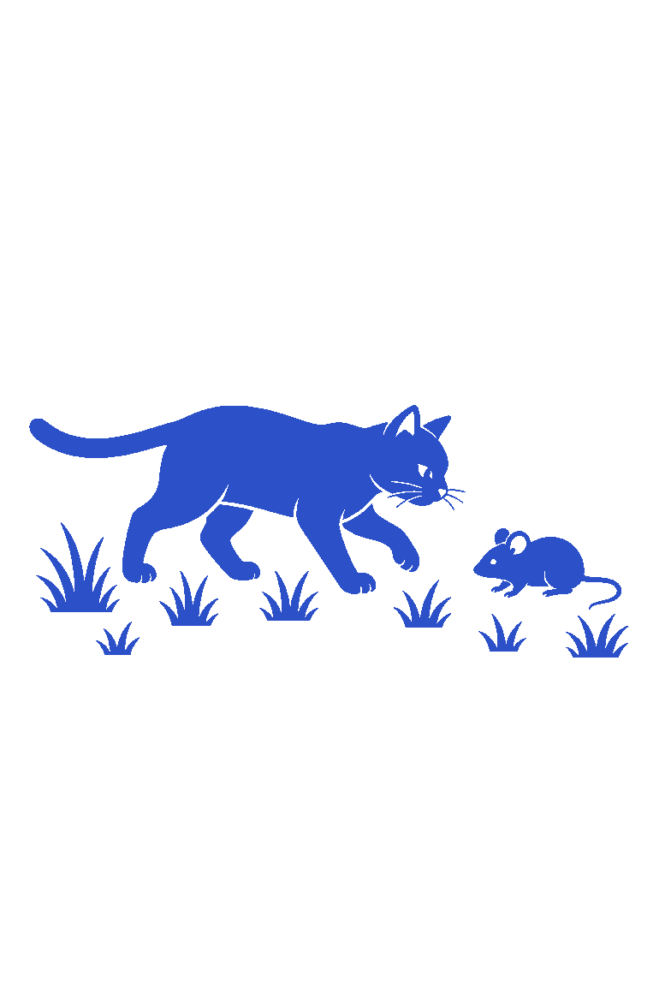
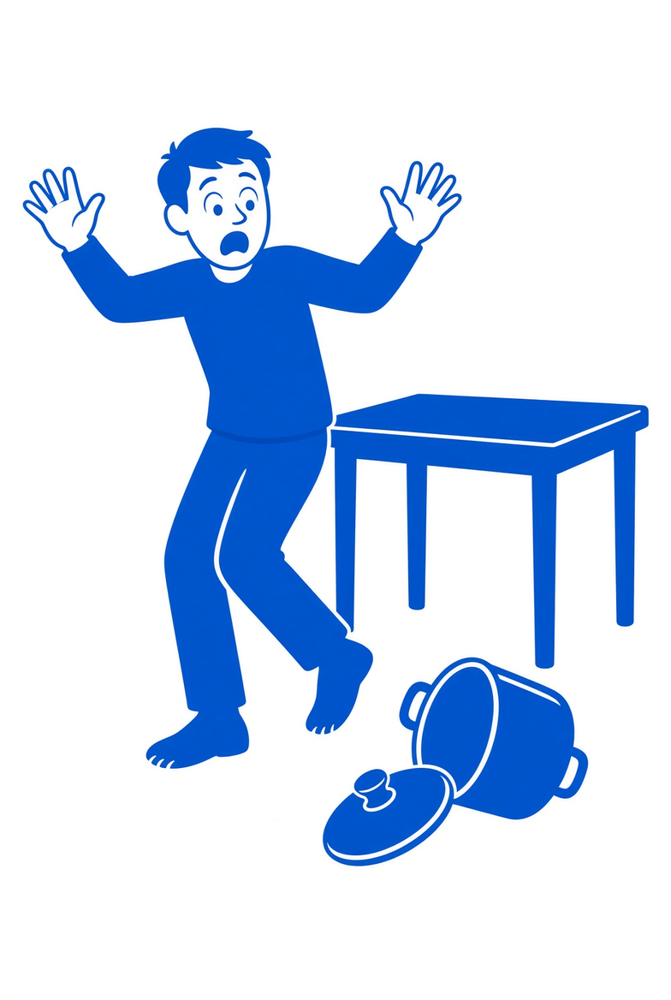
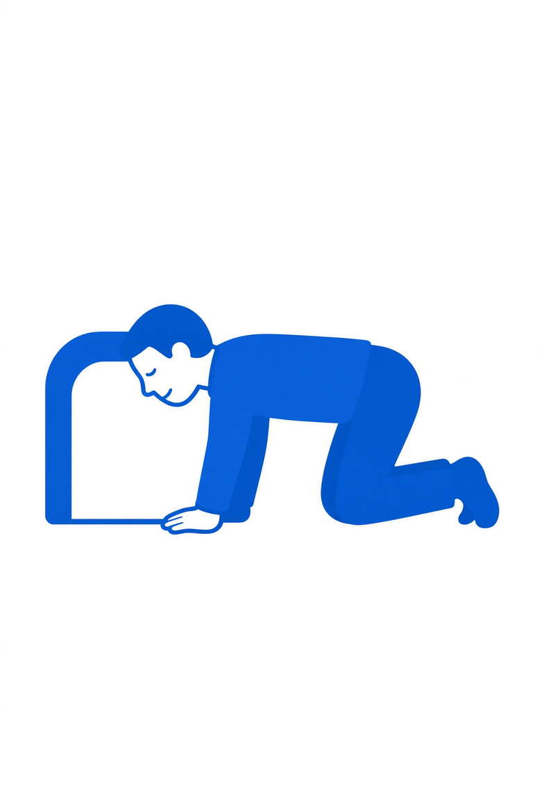
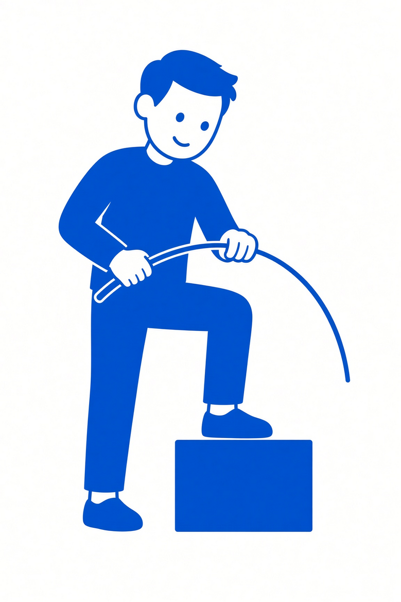
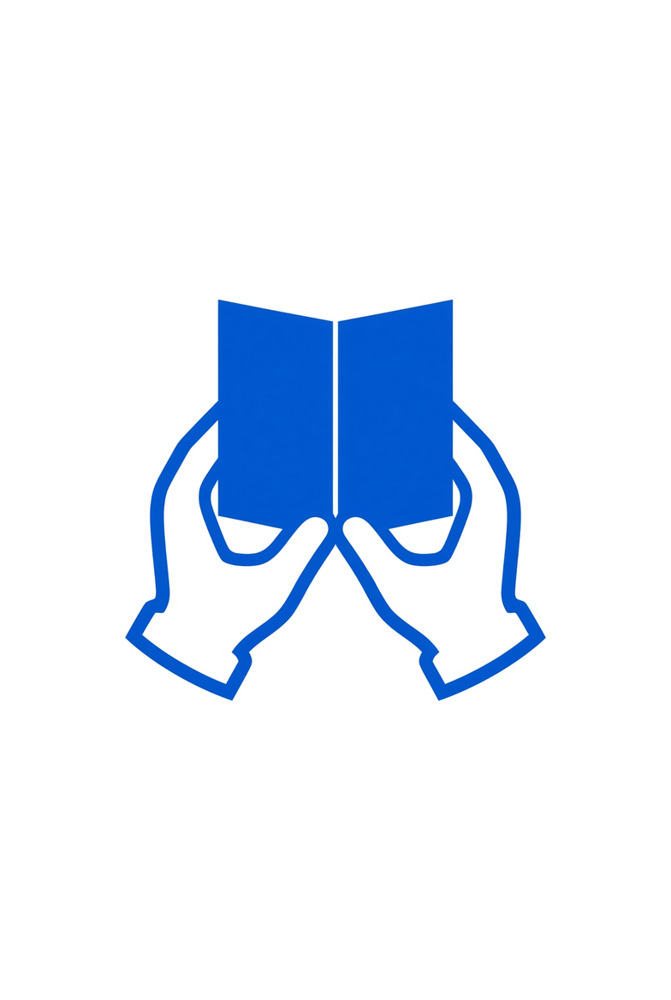

bieden
to offer
onregelmatigrang 657Money & tradegetekend
boodheeft geboden
- Scene
- one adult at a plain counter holds out one folded banknote flat on an open palm towards a shopkeeper, who stands facing them with a lamp in one hand and the other palm raised and turned down. The note is offered and not yet taken, and no till or price card is in the frame. Above the head of the CUSTOMER offering the note floats one bold solid cobalt arrow pointing straight down at the head, with a clear white gap between arrow tip and hair; it marks who performs the verb. The other person has no arrow. No text.
- Must read
- a note held out flat on an open palm towards a shopkeeper who has not taken it.
- Avoid
- a note pushed flat along the counter beside a paper bag (kopen); one hand held palm-up and empty with no note (vragen); a cardboard box passing between two people (geven); a note pressed back into the same hand (krijgen).
- Alt text
- Een volwassene houdt een opgevouwen briefje op een open handpalm naar de winkelier, die een lamp vasthoudt en de andere hand ophoudt.
- Example
- Zij bieden ons thee.
They offer us tea.
bieden.png · rang 657 · B1 onregelmatig · lexicon woorden.tsv

vervangen
to replace
onregelmatigrang 776Abstract & generalgetekend
vervingheeft vervangen
- Scene
- one adult kneels beside a bicycle and lifts a flat tyre out of the front fork with both hands, a small pump and a second tyre already on the ground beside them; the old tyre is clear of the rim and held up, and the rest of the bicycle stays whole.
- Must read
- a flat tyre held up in both hands, clear of the bicycle wheel.
- Avoid
- a pump in one hand against a bare tyre (repareren); a box carried towards a half-open door (brengen); one note offered flat on a palm (bieden); a coin and a price sign on a counter (betalen).
- Alt text
- Iemand houdt op de hurken bij een fiets een lekke band omhoog, los van het wiel.
- Example
- Ik moet de lamp vervangen.
I have to replace the lamp.
vervangen.png · rang 776 · B1 onregelmatig · lexicon woorden.tsv

begraven
to bury
onregelmatigrang 1178Abstract & generalgetekend
begroefheeft begraven
- Scene
- one adult stands beside a fresh mound of turned earth in a small garden, full figure head to feet with the feet visible, a spade in one hand with its blade on the ground, and with the other hand lays a few cut flowers flat on top of the mound. No marker, no hole, no body.
- Must read
- a fresh mound of earth with cut flowers being laid on it.
- Avoid
- a small tree pressed into a garden hole (planten); a spade lifting soil out of a trench (graven); a gravestone or any marker; three people with heads bowed; a person kneeling to look under a sofa (zoeken).
- Alt text
- Iemand staat met een schop bij een verse hoop aarde en legt er een paar bloemen op.
- Example
- De hond wil zijn bot begraven.
The dog wants to bury its bone.
begraven.png · rang 1178 · B1 onregelmatig · lexicon woorden.tsv

sterven
to die
onregelmatigrang 1269Body & healthgetekend
stierfis gestorven
- Scene
- one very old adult lies on a bed seen from the side, full figure, with both eyes closed and both hands folded on the blanket, face calm and still, mouth one short horizontal line with no upturned corners (not a smile); a plain wooden chair stands empty beside the bed on the viewer's side, between the bed and the side table, and on the side table a short candle stub with melted wax pooled at its base burns with one tiny flame.
- Must read
- an old person lying still with folded hands and a burned-down candle.
- Avoid
- both hands pressed on one chest (zijn); hands held up towards the sky beside a bed (bidden); a person asleep with a snore mark (slapen); a doctor beside a bed with a clipboard (onderzoeken); a cross or a headstone (begraven).
- Alt text
- Een heel oude mens ligt met gevouwen handen op bed; naast het bed brandt een kaarsje bijna op.
- Example
- Veel oude bomen sterven door de droogte.
Many old trees die because of the drought.
sterven.png · rang 1269 · B1 onregelmatig · lexicon woorden.tsv

bewegen
to move
onregelmatigrang 1381Movement & positiongetekend
bewoogheeft bewogen
- Scene
- one adult stands in a bare room with both arms swept out wide to the sides and one leg lifted half off the floor, caught mid-swing; short repeated curved strokes trail in the air behind the arms and behind the lifted foot and nowhere else in the frame.
- Must read
- an arm swung wide beside a foot leaving the floor.
- Avoid
- the front foot flat and the back foot just lifted, arms swinging in opposition (lopen); a person standing straight with arms along the body (staan); a body flat on a bed with eyes open (liggen); a still statue on a plinth (staan); a marching band (marcheren).
- Alt text
- Iemand staat met de armen wijd in een lege kamer, een been van de vloer, korte strepen achter de armen.
- Example
- Ik moet meer bewegen.
I need to move more.
bewegen.png · rang 1381 · B1 onregelmatig · lexicon woorden.tsv
geen beeld
gedragen
to behave
onregelmatigrang 1433Character & behaviour
gedroegheeft gedragen
- Scene
- three children sit at a table with straight backs and hands folded in their laps while one adult watches them with a smile.
- Must read
- children sitting upright with hands folded in their laps.
- Avoid
- a child throwing food (gooien); a child climbing on the table (klimmen); children running (rennen); a child asleep with its head on its arms (slapen).
- Alt text
- Drie kinderen zitten met rechte rug en handen in de schoot aan tafel; een volwassene kijkt tevreden.
- Example
- De kinderen gedragen zich netjes bij oma.
The children behave nicely at grandma's.
gedragen.png · rang 1433 · B1 onregelmatig · lexicon woorden.tsv
geen beeld
bevinden
to be located
onregelmatigrang 1581Abstract & general
bevondheeft bevonden
- Scene
- one adult stands holding open a large plain map in both hands, a single round pin pushed into the middle of it, one index finger resting right beside the pin; the face is turned to the pin and the coastline on the map has no writing.
- Must read
- a single round pin in the middle of an open map with one finger beside it.
- Avoid
- a person pointing at a faraway tree (wijzen); a person folding a map shut (vouwen); a person walking along a path (lopen); a ship on open water; a compass.
- Alt text
- Iemand houdt een grote kaart open met één ronde speld in het midden en een vinger ernaast.
- Example
- Het station bevindt zich in het centrum.
The station is located in the centre.
bevinden.png · rang 1581 · B1 onregelmatig · lexicon woorden.tsv

vergelijken
to compare
onregelmatigrang 1774Thought & knowledgegetekend
vergeleekheeft vergeleken
- Scene
- one adult stands at a table between two apples that sit an arm's length apart and slowly turns the head from the left apple to the right; a hand is held above each apple, each hand horizontal with the palm facing down like a lid and the fingers pointing forward, hovering a thumb's width over its apple, not vertical and not palm-out; the two hands are held at exactly the same height above the two apples.
- Must read
- two hands held level above two separate apples.
- Avoid
- one hand hovering above one of two jars (kiezen); a face card held above a head (kennen); two pans on a balance (wegen); a person with an eye to a microscope (onderzoeken); a price tag on either apple (kopen).
- Alt text
- Een volwassene kijkt van de ene appel naar de andere en houdt beide handen op precies dezelfde hoogte erboven.
- Example
- Wij vergelijken de prijzen van twee winkels.
We compare the prices of two shops.
vergelijken.png · rang 1774 · B1 onregelmatig · lexicon woorden.tsv

zwijgen
to be silent
onregelmatigrang 2020Communication & languagegetekend
zweegheeft gezwegen
- Scene
- one adult sits at a plain table facing a second adult across it, full figure, mouth shut, with the index finger lying horizontally across both closed lips, the fingertip reaching the opposite cheek, the finger crossing the mouth and not pointing up beside the face; eyes level and steady. The other adult has an open mouth and both hands lifted, and no speech bubble touches the silent one.
- Must read
- a finger laid across closed lips at a shared table.
- Avoid
- two people close together with speech bubbles (praten); a mouth wide open and two cupped hands (roepen); a telephone held to one ear (bellen); a hand raised flat for silence (waarschuwen); a crossed-out mouth (weigeren).
- Contrast
- Pair with spreken. Same adult: a finger lies across closed lips here, the mouth is open with a bubble above the head there.
- Alt text
- Iemand legt een vinger overdwars op de lippen, terwijl de persoon aan de overkant van tafel net iets wil zeggen.
- Example
- De leerlingen zwijgen als de leraar binnenkomt.
The pupils fall silent when the teacher comes in.
zwijgen.png · rang 2020 · B1 onregelmatig · lexicon woorden.tsv

duiken
to dive
onregelmatigrang 2397Sport & gamesgetekend
dookheeft/is gedoken
- Scene
- one adult is caught just above the water of a swimming pool in an arched dive, seen from the side, full figure: the head and arms point straight down with the fingertips one hand's width above the water and not yet touching it, both knees visibly bent with the shins folded up so the feet are the highest point. The water is only a plain wavy surface line; no slab, edge, board or platform anywhere.
- Must read
- fingertips a hand's width above the water, feet highest.
- Avoid
- an arm stretched forward over the water with the head up (zwemmen); a foot on the pool ladder (stappen); a body already under the surface (zwemmen); a board under both hands (drijven); a boat with sails (varen); a springboard with a crowd (springen).
- Contrast
- Pair with zwemmen. Same pool and the same swimmer: the body arcs into the water from above here, the head is already up with one arm forward there.
- Alt text
- Een zwemmer is in een boog boven het water: de handen gaan recht naar beneden en de voeten staan hoog.
- Example
- De zwemmer duikt in het diepe water.
The swimmer dives into the deep water.
duiken.png · rang 2397 · B1 onregelmatig · lexicon woorden.tsv

verbinden
to bandage
onregelmatigrang 2534Abstract & generalgetekend
verbondheeft verbonden
- Scene
- one adult kneels beside a chair and winds a bandage twice around a child's bare forearm; the loose end of the bandage is held in the adult's fingers and the child's sleeve is rolled up. A first aid box lies open on the floor between them.
- Must read
- a bandage being wound around a child's bare forearm.
- Avoid
- an adult pushing a pram along the pavement (wandelen); a spoon held to a patient's mouth (voeren); a doctor tapping a knee with a hammer (onderzoeken); two ropes knotted together (binden).
- Alt text
- Een volwassene zit geknield naast een kind en wikkelt een wit verband om de onderarm.
- Example
- De dokter verbindt mijn gewonde hand.
The doctor bandages my injured hand.
verbinden.png · rang 2534 · B1 onregelmatig · lexicon woorden.tsv
geen beeld
strijden
to fight, to compete
onregelmatigrang 2576Abstract & general
streedheeft gestreden
- Scene
- Two adults sit facing each other at a table with their right hands locked together and elbows planted on the table; both faces are strained and a few onlookers lean in behind them.
- Must read
- Two locked hands and planted elbows on a table with strained faces.
- Avoid
- a fist striking a bag (slaan); a person lifting a cup overhead (winnen); two people pulling a rope (trekken); two people shoving each other (duwen).
- Alt text
- Twee mensen zitten tegenover elkaar aan een tafel met in elkaar gegrepen handen en gespannen gezichten.
- Example
- De twee teams strijden om de beker.
The two teams are competing for the cup.
strijden.png · rang 2576 · B1 onregelmatig · lexicon woorden.tsv
geen beeld
dwingen
to force
onregelmatigrang 2634Abstract & general
dwongheeft gedwongen
- Scene
- one man stands behind a woman and pushes her with both hands on her back toward an open door; she plants her feet and leans back against the push.
- Must read
- a man pushing a woman toward an open door while she leans back with planted feet.
- Avoid
- a person pushing a loaded cart (duwen); a person leading someone by the elbow (helpen); a person pulling a rope (trekken); two people carrying a box (dragen).
- Alt text
- Een man zet beide handen op de rug van een vrouw en duwt haar naar een open deur; zij zet haar voeten schrap en leunt achterover.
- Example
- Mijn broer dwingt me mee te gaan.
My brother forces me to come along.
dwingen.png · rang 2634 · B1 onregelmatig · lexicon woorden.tsv

scheiden
to separate
onregelmatigrang 2649People & relationsgetekend
scheiddeheeft/is gescheiden
- Scene
- One adult sits at a plain table and pulls two tangled cords apart, one cord in each hand, the hands moving away from each other; the last loop is just slipping free in the middle. Nothing else is on the table.
- Must read
- two cords pulled apart in two hands, the last loop slipping free.
- Avoid
- a sheet of paper torn in two (scheuren); two hands tying a knot (knopen); a rope pulled tight between two people (trekken); two rings side by side (trouwen); scissors through a cord (knippen).
- Alt text
- Iemand trekt aan een tafel twee verwarde snoeren uit elkaar, in elke hand één.
- Example
- Wij scheiden het afval in drie bakken.
We separate the waste into three bins.
scheiden.png · rang 2649 · B1 onregelmatig · lexicon woorden.tsv

jagen
to hunt
onregelmatigrang 2709Animalsgetekend
jaagde / joegheeft gejaagd
- Scene
- a cat crouches low in grass, body stretched and tail straight, eyes fixed on a mouse a short way ahead; one front paw is lifted mid-step. No person in the picture.
- Must read
- a crouching cat with its eyes fixed on a mouse.
- Avoid
- a cat asleep on a cushion (slapen); a dog on a lead beside an adult (uitlaten); a cat running with nothing ahead (rennen); a mouse already in the cat's mouth; a rifle.
- Alt text
- Een kat sluipt laag door het gras met de ogen strak op een muis.
- Example
- De vos jaagt 's nachts op muizen.
The fox hunts mice at night.
jagen.png · rang 2709 · B1 onregelmatig · lexicon woorden.tsv
geen beeld
overwegen
to consider
onregelmatigrang 2837Thought & knowledge
overwoogheeft overwogen
- Scene
- one adult stands with both palms turned up at the same height on either side of the body, a small apple resting on the left palm and a small pear on the right; the head is tilted and the eyes go from one palm to the other.
- Must read
- two palms up at the same height with one fruit on each, head tilted.
- Avoid
- a person with a finger at the chin (denken); a person walking down one branch of a fork (besluiten); a balance on a table (wegen); a person taking one of two jars (kiezen); a thought bubble.
- Alt text
- Iemand houdt in elke open hand één stuk fruit op gelijke hoogte en kijkt scheef van het ene naar het andere.
- Example
- Ik overweeg om een nieuwe baan te zoeken.
I am considering looking for a new job.
overwegen.png · rang 2837 · B1 onregelmatig · lexicon woorden.tsv

meten
to measure
onregelmatigrang 2873Quantity & measuregetekend
matheeft gemeten
- Scene
- one adult stands at the end of a long plank and pulls a tape measure out along it; the hook is fixed on the plank end and the thin metal band, marked only with plain tick marks, is drawn taut, the free hand holding the case at eye level with the eyes on the marks. The room is otherwise empty. A long plank lies flat on two trestles at waist height and the person stands beside it on the ground; the tape's hook is clamped over the near plank end and the thin band lies straight and taut along the plank's top surface from that end; the free hand holds the tape case at eye level. The person holds the tape case in the near hand at the plank's near end, with the thin band running continuously from the case to a hook at the far end; no separate marks and no floating case.
- Must read
- a taut tape measure drawn out along a plank.
- Avoid
- a hand held up with fingers spread at arm’s length (schatten); a wall clock; a balance with two pans (wegen); a ruler laid on a sheet of paper (tekenen); a weighing scale with a dial.
- Alt text
- Een volwassene trekt een rolmaat uit langs een plank en kijkt naar de streepjes.
- Example
- De arts meet mijn bloeddruk.
The doctor measures my blood pressure.
meten.png · rang 2873 · B1 onregelmatig · lexicon woorden.tsv
geen beeld
vergeven
to forgive
onregelmatigrang 2893Character & behaviour
vergafheeft vergeven
- Scene
- two adults stand facing each other at arm's length, the first one extending one open hand towards the second, who looks down and holds both hands clasped in front of the belt; the first adult's face is calm and the head slightly tilted; the hands are about to meet.
- Must read
- one adult extending an open hand to a second adult who looks down with clasped hands.
- Avoid
- two people shaking hands as a greeting (groeten); two people hugging (omhelzen); two people pointing at each other with raised fingers (ruziemaken); a person giving a gift (geven); two people turning their backs (negeren).
- Alt text
- Een volwassene steekt een open hand uit naar een ander die met gevouwen handen naar beneden kijkt.
- Example
- Ik kan je dit nooit vergeven.
I can never forgive you for this.
vergeven.png · rang 2893 · B1 onregelmatig · lexicon woorden.tsv
geen beeld
treffen
to run into
onregelmatigrang 2939Abstract & general
trofheeft getroffen
- Scene
- an arrow sits with its tip in the centre ring of a round target on a stand; the arrow still quivers and an archer lowers the bow in the background.
- Must read
- an arrow tip sitting in the middle ring of a round target.
- Avoid
- an arrow still flying through the air (schieten); an arrow stuck in the grass beside the target (missen); a hammer on a nail (slaan); a fingertip touching a glass (raken).
- Alt text
- Een pijl zit in het midden van een rond doelwit; een boogschutter laat de boog zakken.
- Example
- Hij treft het doel met zijn eerste pijl.
He hits the target with his first arrow.
treffen.png · rang 2939 · B1 onregelmatig · lexicon woorden.tsv
geen beeld
treffen (ontmoeten)
to meet up
onregelmatigrang 2939Abstract & general
trofheeft getroffen
- Scene
- two adults come round the same street corner from opposite sides and both stop short face to face with raised eyebrows and open hands; each carries a shopping bag.
- Must read
- two people face to face at a street corner, both surprised.
- Avoid
- two people bumping into each other (botsen); two people greeting with a nod (groeten); one person waiting alone at a corner (wachten); two people hugging (omarmen).
- Alt text
- Twee mensen staan oog in oog bij een hoek van de straat, beiden verrast met een tas in de hand.
- Example
- Ik tref mijn buurvrouw vaak in de supermarkt.
I often meet my neighbour at the supermarket.
treffen-ontmoeten.png · rang 2939 · B1 onregelmatig · lexicon woorden.tsv
geen beeld
bevallen
to give birth
onregelmatigrang 2950Body & health
bevielis bevallen
- Scene
- one woman lies in a hospital bed with her knees raised, her face tense; a man holds her hand and a nurse stands at the foot of the bed.
- Must read
- a woman in a hospital bed with raised knees, a man holding her hand, a nurse at the foot.
- Avoid
- a pregnant woman standing with a hand on her belly (verwachten); a woman cradling a baby (dragen); a baby crying in a cot (huilen); a woman asleep in bed (slapen).
- Alt text
- Een vrouw ligt in een ziekenhuisbed met opgetrokken knieen; een man houdt haar hand vast en een verpleegster staat aan het voeteneinde.
- Example
- Ze bevalt van een dochter.
She gives birth to a daughter.
bevallen.png · rang 2950 · B1 onregelmatig · lexicon woorden.tsv
geen beeld
bevallen (bevalt)
to please, to suit
onregelmatigrang 2950Body & health
bevielis bevallen
- Scene
- one woman sits smiling in a new armchair in a shop, stroking the arm of the chair with one hand while a shop assistant stands beside her and nods.
- Must read
- a smiling woman stroking the arm of an armchair she sits in.
- Avoid
- a woman buying at a till (kopen); a woman dozing in a chair (slapen); a woman choosing between two chairs (kiezen); a woman pointing at a chair (wijzen).
- Alt text
- Een vrouw zit lachend in een fauteuil en streelt de armleuning; een verkoper kijkt toe.
- Example
- Het nieuwe huis bevalt me goed.
I like the new house very much.
bevallen-bevalt.png · rang 2950 · B1 onregelmatig · lexicon woorden.tsv
geen beeld
klinken
to clink
onregelmatigrang 2967Abstract & general
klonkheeft geklonken
- Scene
- two adults stand facing each other at chest height, each holding a stemmed glass, the rims just touching in the middle; both smile.
- Must read
- two glass rims touching between two smiling adults.
- Avoid
- a person drinking from a glass (drinken); a glass smashing on the floor (breken); a person pouring from a bottle (inschenken); one person raising a glass alone (heffen).
- Alt text
- Twee mensen houden elk een glas omhoog en de randen raken elkaar in het midden.
- Example
- Wij klinken met onze glazen.
We clink our glasses.
klinken.png · rang 2967 · B1 onregelmatig · lexicon woorden.tsv
geen beeld
genezen
to heal
onregelmatigrang 2997Body & health
genasheeft/is genezen
- Scene
- an adult sits on the edge of a bed and bends a freed arm with a smile; a plaster cast cut in two halves lies on the floor and a nurse stands beside with a pair of scissors.
- Must read
- a freed arm beside a cast cut in two on the floor.
- Avoid
- an arm in a sling (breken); a doctor bandaging an arm (verbinden); a person in bed with a thermometer (liggen); a nurse feeding a patient (verzorgen).
- Alt text
- Iemand zit op een bed en buigt lachend een vrije arm; een opengesneden gipsverband ligt op de vloer.
- Example
- Mijn been is snel genezen.
My leg healed quickly.
genezen.png · rang 2997 · B1 onregelmatig · lexicon woorden.tsv

graven
to dig
onregelmatigrang 3000Movement & positiongetekend
groefheeft gegraven
- Scene
- one adult stands in a garden and lifts a spade loaded with clods out of a shallow trench, the turned earth thrown up in a long mound beside it.
- Must read
- a spade lifted out of the earth with a load of soil.
- Avoid
- a hand pushing a small tree down into a hole (planten); a person at a laptop at a desk (werken); a child pressing a toy spade into sand (spelen); a spade by a fresh mound with flowers on it (begraven); a machine (bouwen).
- Alt text
- Iemand in een tuin trekt de schop vol kluiten aarde uit een sleuf, met een hoop omgewoelde grond ernaast.
- Example
- De kinderen graven een gat in het zand.
The children dig a hole in the sand.
graven.png · rang 3000 · B1 onregelmatig · lexicon woorden.tsv
geen beeld
verdragen
to bear
onregelmatigrang 3080Animals
verdroegheeft verdragen
- Scene
- one adult stands with both hands pressed on the ears, eyes shut tight and teeth clenched, while a worker a few steps away holds a drilling machine against a wall.
- Must read
- both hands pressed flat over the ears with eyes shut next to a drilling worker.
- Avoid
- a person asleep (slapen); a person listening through headphones (luisteren); a person shouting (schreeuwen); a person covering the eyes in fear (schrikken).
- Alt text
- Iemand drukt met beide handen de oren dicht en knijpt de ogen toe terwijl een werkman boort.
- Example
- Ik kan dit lawaai niet verdragen.
I cannot bear this noise.
verdragen.png · rang 3080 · B1 onregelmatig · lexicon woorden.tsv

blazen
to blow
onregelmatigrang 3140Abstract & generalgetekend
bliesheeft geblazen
- Scene
- One adult stands at a plain table and blows out a single candle, the lips a hand-width from the flame and pursed, the cheeks puffed, the flame bent sharply sideways and halfway out; a closed matchbox lies on the table and one thin curl of smoke rises.
- Must read
- a pursed mouth beside a candle flame bent over and nearly out.
- Avoid
- a pair of open lips shaping a long word (spreken); a hand waving beside the candle with the lips closed (zwaaien); a mouth on the rim of a full glass (drinken); a match struck against a box.
- Alt text
- Een volwassene heeft de lippen vlak bij een kaars; de vlam buigt opzij en dooft bijna uit.
- Example
- De jongen blaast de kaarsjes uit.
The boy blows out the candles.
blazen.png · rang 3140 · B1 onregelmatig · lexicon woorden.tsv
geen beeld
bevelen
to command
onregelmatigrang 3186Communication & language
bevalheeft bevolen
- Scene
- one man in a cap and uniform stretches one arm out toward a door with the other hand on his hip and his mouth open; a second man stands still with arms hanging.
- Must read
- an arm stretched out toward a door by a uniformed man with an open mouth.
- Avoid
- a person pointing at a faraway thing (wijzen); a person shouting through cupped hands (roepen); a person asking a question with a raised hand (vragen); a person shoving someone (duwen).
- Alt text
- Een man met een pet strekt een arm uit naar een deur met open mond; een ander staat stil met hangende armen.
- Example
- De officier beveelt de soldaten te gaan zitten.
The officer orders the soldiers to sit down.
bevelen.png · rang 3186 · B1 onregelmatig · lexicon woorden.tsv
geen beeld
bezitten
to own
onregelmatigrang 3227Abstract & general
bezatheeft bezeten
- Scene
- one adult stands between a small house and a car with one hand on the car roof and the other on the hip, chin lifted and a proud smile.
- Must read
- a figure with a hand on a car roof beside a house, chin up.
- Avoid
- a person holding up a car key (hebben); a person handing over keys (geven); a person paying at a shop counter (kopen); a person sitting in the car (rijden).
- Alt text
- Een man staat met een hand op het dak van een auto naast een huis en kijkt trots.
- Example
- Mijn oom bezit een groot huis.
My uncle owns a big house.
bezitten.png · rang 3227 · B1 onregelmatig · lexicon woorden.tsv

schrikken
to be frightened
onregelmatigrang 3490Emotion & feelinggetekend
schrokis geschrokken
- Scene
- One adult stands by a plain table and jerks backwards away from a fallen steel pan, both hands flung up at shoulder height, eyes wide, mouth open, one heel lifted off the floor; the pan lies on its side on the floor and its lid is rolling.
- Must read
- a person flinching backwards from a clattering pan, both hands up.
- Avoid
- two adults facing each other with one open mouth (spreken); a person leaning over a laptop at a desk (werken); a shoulder wedged into a queue (dringen); a person asleep in a bed (slapen).
- Alt text
- Iemand schiet achteruit weg van een gevallen pan, handen omhoog en ogen wijd.
- Example
- Ik schrik van de harde knal.
I am startled by the loud bang.
schrikken.png · rang 3490 · B1 onregelmatig · lexicon woorden.tsv

kruipen
to crawl
onregelmatigrang 3727Abstract & generalgetekend
kroopheeft/is gekropen
- Scene
- One adult moves on all fours over bare floor beside a low tunnel opening, the knees and both hands on the ground, the back level and low, one knee just lifted forward; the head is kept down below the tunnel's top edge, and the tunnel mouth is close in front.
- Must read
- a low body on hands and knees moving forward into a tunnel.
- Avoid
- a toddler balanced on two feet mid-step (lopen); a body flat on its back on a bed (liggen); a body hanging on a rope against a wall (klimmen); a person standing bent over at the waist.
- Alt text
- Een volwassene gaat op handen en knieën laag over de vloer naar een kleine tunnel.
- Example
- De baby kruipt over de vloer.
The baby crawls across the floor.
kruipen.png · rang 3727 · B1 onregelmatig · lexicon woorden.tsv
geen beeld
overvallen
to raid, to hold up
onregelmatigrang 3780Law & conflict
overvielheeft overvallen
- Scene
- One adult in a hood with a scarf over the lower face bursts through a shop door holding out a bag toward a shopkeeper behind a counter, who has both hands raised and wide eyes.
- Must read
- A hooded figure at the door holding out a bag to a shopkeeper with both hands up.
- Avoid
- a hand taking an item off a shelf (stelen); a fist striking (slaan); two people shoving (aanvallen); a customer walking calmly in (binnenkomen).
- Alt text
- Iemand met een capuchon en een sjaal voor de mond houdt een tas uit naar een winkelier die beide handen omhoog heeft.
- Example
- Twee mannen overvallen een kleine winkel.
Two men hold up a small shop.
overvallen.png · rang 3780 · B1 onregelmatig · lexicon woorden.tsv
geen beeld
overvallen (verrassen)
to catch off guard
onregelmatigrang 3780Law & conflict
overvielheeft overvallen
- Scene
- One cyclist has stopped on an open road with a hand on the head while a single heavy cloud over him alone drops rain; the rest of the sky is empty.
- Must read
- One cloud dropping rain on a cyclist while the sky around is empty.
- Avoid
- rain falling over a whole street (regenen); a person jumping at a noise (schrikken); a person pedalling (fietsen); a person under a roof (schuilen).
- Alt text
- Een fietser staat stil op een weg met een hand op het hoofd terwijl alleen boven hem een wolk druppels laat neerkomen.
- Example
- De regen overvalt ons op de fiets.
The rain catches us out on our bikes.
overvallen-verrassen.png · rang 3780 · B1 onregelmatig · lexicon woorden.tsv
geen beeld
verraden
to betray
onregelmatigrang 3802Character & behaviour
verraaddeheeft verraden
- Scene
- two adults stand side by side looking forward, the nearer one with an arm around the other's shoulder; the nearer adult's other hand, behind the friend's back, passes a folded note to a third adult half hidden behind a pillar.
- Must read
- one hand behind a friend's back passing a folded note to a third person.
- Avoid
- two people whispering together (fluisteren); a person giving a gift in the open (geven); a person telling a secret to a crowd (vertellen); two friends hugging (omhelzen).
- Alt text
- Iemand legt een arm om een vriend en geeft met de andere hand achter diens rug een briefje aan iemand achter een pilaar.
- Example
- Hij verraadt zijn beste vriend.
He betrays his best friend.
verraden.png · rang 3802 · B1 onregelmatig · lexicon woorden.tsv
geen beeld
zenden
to transmit
onregelmatigrang 3806Movement & position
zondheeft gezonden
- Scene
- one adult stands beside a freestanding post box with one arm stretched out, pushing a plain flat envelope half into its slot, the other hand still holding the corner.
- Must read
- an envelope pushed half into the slot of a post box.
- Avoid
- a person handing an envelope to another (overhandigen); a person opening an envelope (openen); a person dropping coins into a slot (betalen); a person writing a letter at a desk (schrijven).
- Alt text
- Iemand steekt een enveloppe half in de gleuf van een vrijstaande brievenbus.
- Example
- Ik zend je morgen een brief.
I will send you a letter tomorrow.
zenden.png · rang 3806 · B1 onregelmatig · lexicon woorden.tsv
geen beeld
betreden
to enter
onregelmatigrang 3815Movement & position
betradheeft betreden
- Scene
- one adult steps up from the top stair onto the floor of a raised stage with one foot lifted over the edge and the other still on the stair; curtains hang at both sides.
- Must read
- one foot lifted from the top stair onto the stage floor.
- Avoid
- a person climbing a ladder (klimmen); a person already walking across the stage (lopen); a person jumping down from the stage (springen); a person standing at a door (wachten).
- Alt text
- Iemand zet een voet van de bovenste trede op de vloer van een verhoging met een gordijn opzij.
- Example
- Hij betreedt het podium onder groot applaus.
He steps onto the stage to loud applause.
betreden.png · rang 3815 · B1 onregelmatig · lexicon woorden.tsv
geen beeld
werpen
to hurl
onregelmatigrang 3865Movement & position
wierpheeft geworpen
- Scene
- one adult stands side-on with the throwing arm fully raised behind the head and the other arm pointing forward; a ball has just left the fingers.
- Must read
- an arm extended overhead with a ball just leaving the fingers.
- Avoid
- a hand catching a ball (vangen); a foot kicking a ball (schoppen); a bat hitting a ball (slaan); a ball rolling on the ground (rollen).
- Alt text
- Iemand staat zijwaarts met een gestrekte arm boven het hoofd en een bal vliegt net uit de vingers.
- Example
- De jongen werpt de bal naar zijn vader.
The boy throws the ball to his father.
werpen.png · rang 3865 · B1 onregelmatig · lexicon woorden.tsv
geen beeld
omgeven
to surround
onregelmatigrang 4109Abstract & general
omgafheeft omgeven
- Scene
- one small castle with a tower and a gate stands in the middle of the picture, and a ring of water circles it all the way round, drawn as wavy bands of line; a single bridge crosses the ring at the front.
- Must read
- a small castle with a ring of water circling all the way around it.
- Avoid
- a castle standing on a hill with a path (staan); a wall with a gate in the middle (sluiten); a river flowing in a straight line (stromen); a castle with a flag (wapperen); a boat on a lake (varen).
- Alt text
- Een klein kasteel staat midden in een brede ring van golvend water met één brug aan de voorkant.
- Example
- Een brede gracht omgeeft het kasteel.
A wide moat surrounds the castle.
omgeven.png · rang 4109 · B1 onregelmatig · lexicon woorden.tsv
geen beeld
spinnen
to spin (thread); to purr
onregelmatigrang 4120Animals
sponheeft gesponnen
- Scene
- one adult sits beside an old-fashioned spinning wheel, one hand feeding a tuft of loose wool and the other pulling a thin thread toward a bobbin; the wheel is mid-turn.
- Must read
- loose wool drawn into a thin thread beside a large wheel.
- Avoid
- a person knitting with needles (breien); a person weaving at a loom (weven); a person turning round on the spot (draaien); a ball of wool rolling away (rollen).
- Alt text
- Iemand zit naast een groot houten wiel en trekt van een pluk wol een dunne draad.
- Example
- Mijn oma spint wol.
My grandmother spins wool.
spinnen.png · rang 4120 · B1 onregelmatig · lexicon woorden.tsv

buigen
to bend
onregelmatigrang 4144Movement & positiongetekend
boogheeft gebogen
- Scene
- one adult stands with one foot on a low block and presses a long thin metal rod over the raised knee with both hands, the rod curved into a clear arc but unbroken; the eyes are on the curve.
- Must read
- a rod curved into an unbroken arc between two hands.
- Avoid
- a wooden lath snapping with splinters in the air (breken); a person bowing from the waist (groeten); a rope pulled tight between two hands (trekken); a rod lying straight on the floor.
- Alt text
- Iemand drukt een lange dunne staaf over de knie; de staaf staat krom maar knapt niet.
- Example
- Ik kan mijn knie na de val niet buigen.
I cannot bend my knee after the fall.
buigen.png · rang 4144 · B1 onregelmatig · lexicon woorden.tsv
geen beeld
overwinnen
to overcome
onregelmatigrang 4232Abstract & general
overwonheeft overwonnen
- Scene
- two people sit facing each other at a table with their right hands locked; one hand is pressed flat onto the table by the other and the winner grins.
- Must read
- one hand pressed flat onto the table by the other in a hand lock.
- Avoid
- a cup held up as a prize (winnen); two hands pushing on a door (duwen); a fist hitting a person (slaan); a person sitting sad alone (verliezen).
- Alt text
- Twee mensen zitten tegenover elkaar aan tafel; van een van hen wordt de hand door de ander plat neergedrukt.
- Example
- Hij overwint zijn broer met armpje drukken.
He beats his brother at arm wrestling.
overwinnen.png · rang 4232 · B1 onregelmatig · lexicon woorden.tsv
geen beeld
ontkomen
to get away from
onregelmatigrang 4346Movement & position
ontkwamis ontkomen
- Scene
- one adult sits astride the top of a tall wall with one leg already over the far side, a hand gripping a short knotted rope tied to the top, and looks back over the shoulder.
- Must read
- a figure straddling the top of a tall wall with a rope down the far side.
- Avoid
- a person climbing a ladder (klimmen); a person running along a wall (rennen); a person jumping off a wall (springen); a person sitting on a wall to rest (zitten).
- Alt text
- Iemand zit schrijlings boven op een hoge muur en laat zich langs een touw aan de andere kant zakken.
- Example
- De dief ontkomt over de muur.
The thief gets away over the wall.
ontkomen.png · rang 4346 · B1 onregelmatig · lexicon woorden.tsv
geen beeld
heffen
to raise, to levy
onregelmatigrang 4393House & home
hiefheeft geheven
- Scene
- one adult stands with the feet apart and holds a bar with one round weight at each end straight above the head with both arms fully stretched, the chin up and the jaw tight.
- Must read
- a bar with a weight on each end held above the head on straight arms.
- Avoid
- a person picking up a box from the floor (pakken); a person jumping with the arms up (springen); a person carrying a bag on the shoulder (dragen); a crowd with the arms raised (juichen); a person with a bent elbow in the air.
- Alt text
- Iemand staat met gespreide voeten en houdt met gestrekte armen boven het hoofd een stang met een schijf aan elk eind.
- Example
- Hij heft de gewichten boven zijn hoofd.
He lifts the weights above his head.
heffen.png · rang 4393 · B1 onregelmatig · lexicon woorden.tsv
geen beeld
ontbijten
to have breakfast
onregelmatigrang 4566Food & drink
ontbeetheeft ontbeten
- Scene
- one person sits at a table with a bowl, a cup and an egg in an egg cup, lifting a spoon toward the mouth.
- Must read
- a spoon lifted toward the mouth at a table with a bowl, a cup and an egg in an egg cup.
- Avoid
- two people with sandwiches on a bench (lunchen); a person with a hot plate of food (eten); a person drinking from a glass (drinken); a person cooking at a stove (koken).
- Alt text
- Iemand zit aan een tafel met een kom, een kopje en een ei in een eierdop en brengt een lepel naar de mond.
- Example
- Wij ontbijten om zeven uur.
We have breakfast at seven.
ontbijten.png · rang 4566 · B1 onregelmatig · lexicon woorden.tsv
geen beeld
ontslaan
to dismiss (from a job)
onregelmatigrang 4688Work & jobs
ontsloegheeft ontslagen
- Scene
- one woman behind a desk pushes an open cardboard box toward a man; the box holds a plant and a picture frame, and the man's shoulders sag.
- Must read
- a woman pushing an open box with a plant and a frame toward a man with sagging shoulders.
- Avoid
- a woman handing a gift box to a smiling man (geven); two people shaking hands (aannemen); two people talking at a desk (praten); a man carrying a box (dragen).
- Alt text
- Een vrouw achter een bureau schuift een open doos met een plant en een lijst naar een man met hangende schouders.
- Example
- De baas ontslaat twee werknemers.
The boss fires two employees.
ontslaan.png · rang 4688 · B1 onregelmatig · lexicon woorden.tsv
geen beeld
verwijten
to reproach
onregelmatigrang 4837Character & behaviour
verweetheeft verweten
- Scene
- one woman wags a raised index finger at a man who holds a broken cup in both hands and looks down; her brows are drawn together.
- Must read
- a wagging raised finger aimed at a man holding a broken cup and looking down.
- Avoid
- a person pointing straight at another person (beschuldigen); a person shouting with cupped hands (roepen); a cup falling from a table (vallen); a person laughing (lachen).
- Alt text
- Een vrouw wijst met een opgeheven vinger naar een man die met twee handen een gebroken kopje vasthoudt en omlaag kijkt.
- Example
- Ze verwijt hem dat hij te laat is.
She reproaches him for being late.
verwijten.png · rang 4837 · B1 onregelmatig · lexicon woorden.tsv

smelten
to melt
onregelmatigrang 5357Nature & weathergetekend
smoltheeft/is gesmolten
- Scene
- a snowman stands on a patch of grass under a bright sun, leaning to one side, its head half sunk into the body and a pool of water spreading round its base; one child stands beside it looking down at the puddle.
- Must read
- a snowman sagging into a pool of water.
- Avoid
- fat in a pan on a stove (bakken); a frozen pond (bevriezen); ice cubes in a cup (koud); water poured from a jug (gieten).
- Alt text
- Een sneeuwpop zakt scheef in elkaar in de zon; om de voet ligt een plas water.
- Example
- De sneeuw smelt in de zon.
The snow melts in the sun.
smelten.png · rang 5357 · B1 onregelmatig · lexicon woorden.tsv

vouwen
to fold
onregelmatigrang 7773House & homegetekend
vouwdeheeft gevouwen
- Scene
- two plain white hands hold a single rectangular sheet of paper in the middle of the picture, folded in half, with the fold line running clearly along the middle of the sheet and the two halves lying flat against each other; the hands pinch the folded edge; nothing else in the picture, no table, no other objects.
- Must read
- a sheet of paper folded in half between two hands.
- Avoid
- a shirt hanging on a line; a parcel wrapped in paper (verpakken); paper torn in two (scheuren); a person pulling on a shirt (aankleden).
- Alt text
- Twee handen klappen een vel papier dubbel.
- Example
- Kun je de handdoeken vouwen en in de kast leggen?
Can you fold the towels and put them in the cupboard?
vouwen.png · rang 7773 · B1 onregelmatig · lexicon woorden.tsv

waaien
to blow (wind)
onregelmatigrang 7791Nature & weathergetekend
waaide / woeiheeft gewaaid
- Scene
- one adult walks along an open path bent into the wind, one hand reaching back too late as a hat lifts off the head and flies away behind; the coat and scarf stream back in the same direction. Nothing else is in the picture: no tree, no washing line.
- Must read
- a hat lifting off a head and flying away behind.
- Avoid
- a person blowing out candles (blazen); leaves dropping from a tree (vallen); a person running after a ball (rennen); a tree bending with towels flapping on a line (winderig).
- Alt text
- Iemand loopt voorovergebogen over een pad; de hoed vliegt van het hoofd en de sjaal wappert naar achteren.
- Example
- Het waait hard aan de kust.
It is blowing hard on the coast.
waaien.png · rang 7791 · B1 onregelmatig · lexicon woorden.tsv
geen beeld
verschuilen
to hide oneself
onregelmatigrang 7956Abstract & general
verschoolheeft verscholen
- Scene
- one small child crouches behind the trunk of a thick tree with only one shoulder, a hand clutching the bark and half of the face with one eye showing past the edge of the trunk; the other half of the body is fully hidden.
- Must read
- a child crouched behind a trunk with one eye peeking round the edge.
- Avoid
- a child climbing up a tree (klimmen); a child standing in front of a tree (staan); a child with hands over the eyes (dichtdoen); a child sitting in a box (zitten); a child running away across a field (rennen).
- Alt text
- Een kind hurkt achter een dikke boom en kijkt met één oog langs de rand van de stam.
- Example
- De kat verschuilt zich onder de bank.
The cat hides under the sofa.
verschuilen.png · rang 7956 · B1 onregelmatig · lexicon woorden.tsv